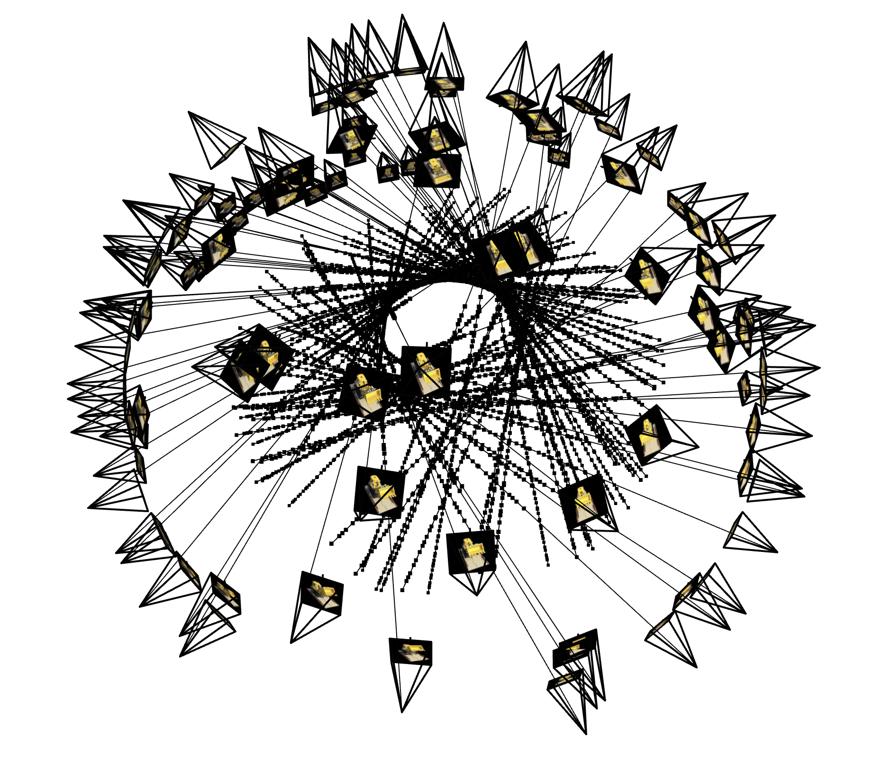

Part 1 and 2: NERF!
As a reference, the images below show the process of optimizing the network to fit on the given images.
The following results are for a neural field trained on a single input image (the fox), as well as a second example (the bear).
Model Architecture and Hyperparameters
- Positional Encoding: L = 10 (total input dimension after encoding: 42)
- MLP Architecture: MLPNeuralField with hidden_dim=256, output_dim=3, num_layers=3
- Loss Function: MSELoss
- Optimizer: Adam with LR=0.001
- Number of Epochs: 1000
PSNR Over Training (Fox)
Below is the PSNR curve over epochs for the "fox" image training run:
Figure: Fox PSNR Curve
Below is the training loss over epochs for the "fox" image:
Figure: Fox Loss Curve
Predicted Images Across Iterations (Fox)
These images show the reconstruction of the fox image at various training epochs, demonstrating the network’s progress.
Fox Reconstruction: Early Epoch
Fox Reconstruction: Intermediate Epoch
Fox Reconstruction: Later Epoch
Fox Reconstruction: Final
Second Example: Bear Image
I then repeated the process on another image (the bear) with a chosen set of hyperparameters.
Below is the PSNR curve and a selection of images during training.
PSNR curve for the bear image with a specific learning rate (1e-4):
Bear PSNR Curve with LR=1e-4
Bear Reconstruction Across Iterations
Bear Reconstruction: Epoch 1
Bear Reconstruction: Epoch 200
Bear Reconstruction: Epoch 400
Bear Reconstruction: Epoch 600
Bear Reconstruction: Epoch 800
Bear Reconstruction: Final
Hyperparameter Tuning
I also ran hyperparameter tuning on the bear image. The following plots show loss curves and final results with different learning rates or network settings.
Bear Loss Curve with LR=1e-4
Bear Loss Curve with Tuned Hyperparameters
Part 2: Fit a Neural Radiance Field from Multi-view Images
In this part, I used a neural radiance field (NeRF) to represent a 3D scene. Starting start from multi-view calibrated images of a Lego object.
I have camera intrinsic and extrinsic parameters that allow us to cast rays into the scene. I then sample points along these rays
and feed them into a Neural Radiance Field MLP to predict density and color. Finally, I then volume render the scene
to compare against ground truth images and optimize the NeRF parameters.
Implementation Details
- Ray and Sample Visualization:
To build the foundation, I first implemented functions that accurately convert coordinates between camera and world reference frames.
Using the camera extrinsics (c2w matrices) and intrinsics (K), I can determine the position and orientation of the camera in the scene.
For each pixel in the image, I generate a ray that originates at the camera center and passes through that pixel in 3D space.
Once I have these rays, I discretize them into a set of sample points along their path. This involves uniform sampling between a "near" and "far" bound,
as well as optional random perturbations to spread out the sampling distribution. The visualizations below depict camera frustums (showing each camera’s field of view),
rays extending from these cameras, and the sampled points along those rays. This ensures a comprehensive, spatially distributed set of 3D locations to query from the NeRF model.
- MLP Architecture:
The core of the NeRF is a Multi-Layer Perceptron (MLP) that takes in 3D world coordinates along with view directions and predicts both density (σ) and color (RGB).
To enable the MLP to represent high-frequency details, I apply positional encoding to both positions and directions, expanding them into a higher-dimensional
feature space using sinusoids at various frequencies. The network architecture includes skip connections that re-inject the original encoded input at deeper layers,
helping the model retain and reconstruct finer details. The density is predicted via a ReLU layer to ensure non-negativity, and color predictions are passed through
a Sigmoid layer to constrain output values between 0 and 1. These design choices follow the original NeRF paper and help in learning a stable, detailed 3D representation.
- Volume Rendering:
With density and color predictions for each sampled point, I integrate along the ray to produce a final pixel value. This step implements the volume rendering equation.
By accumulating transmittance and absorption through the sampled points, I compute the expected color for each ray. To verify correctness, I test my volume rendering
routine against a provided assert statement that checks known outputs for a given set of inputs. Passing this test ensures that the volume rendering logic is implemented correctly.
- Training Setup:
For optimization, I follow the staff’s suggested hyperparameters: an Adam optimizer with a learning rate of 5e-4, and a batch size of 10K rays sampled per iteration.
Training the NeRF involves iteratively refining the network’s weights so that rendered images match the ground-truth training images from multiple viewpoints.
According to the staff solution, these settings can achieve about 23 PSNR after around 1000 iterations. This combination of learning rate, batch size, and iteration count
helps ensure a balance between stability, convergence speed, and final image quality.
Ray, Camera, and Sample Visualization
Below is an example visualization of rays and samples I also draw at a single training step, along with the camera poses.
I also plot up to 100 rays to keep the visualization less crowded as advised by the deliverables.
Sampled Rays Visualization 1

Sampled Rays Visualization 2
Sampled Rays Visualization 3
Sampled Rays Visualization 4
Partial Training Iterations Preview
While I am are still working on the full visualization of the training process (predicted images across more iterations and PSNR curves),
here is a quick preview of the model’s output at a few selected iterations:
Legos Iteration 1
Legos Iteration 2
Legos Iteration 3
Legos Iteration 4
Additional Intermediate Results
Below are some additional iterations showing the model's progress at different completion percentages. As training goes on,
the reconstruction quality improves, and more details become visible:
Lego Reconstruction around 77% through training
 Lego Reconstruction around 88% through training
Lego Reconstruction around 92% through training
Lego Reconstruction around 88% through training
Lego Reconstruction around 92% through training
Novel View Rendering
After training the network, I used it to render novel views of the Lego scene from arbitrary camera extrinsics. Below are examples
of spherical rendering videos showing the Lego from multiple angles. The left video shows the result after 10 minutes of training and
the right one after 2.5 minutes of training, demonstrating the improvement in rendering quality over time.
Spherical Rendering after 10 minutes of training
Spherical Rendering after 2.5 hours of training
Novel View Rendering with Background Bells and Whistles
Spherical Rendering after 10 minutes of training
Spherical Rendering after 2.5 hours of training